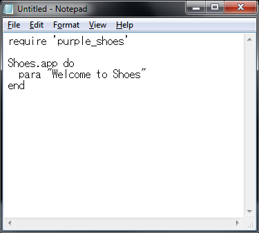

The Purple Shoes Manual 0.7.166
Installing Purple Shoes
Yeah. You need to install JRuby and Gems. But, no need to worry about it. We'll talk through all the steps.
Step 1: Installing Purple Shoes
At first, install JRuby. On Windows, visit the site of JRuby Downloads to download the latest JRuby 1.6.7 Windows Executable.
Then just do the following one line.
- jruby --1.9 -S gem install purple_shoes
That's all. Too easy?
Note: purple_shoes gem is on RubyGems.org. If you get some errors of rdoc, try to add --no-ri --no-rdoc option.
Step 2: Start a New Text File
Shoes programs are just plain text files ending with a .rb extension.
Here are a few ways to create a blank text file:
- On Mac OS X, visit your Applications folder and double-click on the TextEdit app. A blank editor window should come up. Now, go to the Format menu and select the Make Plain Text option. Okay, you're all set!

- On Windows, go to the Start menu. Select All Programs, then Accessories, then Notepad. 
- On Linux, most distros come with gedit. You might try running that. Or, if your distro is KDE-based, run kate.
Now, in your blank window, type in the following:
require 'purple_shoes'
Shoes.app do
para "Welcome to Shoes"
end
Save to your desktop as welcome.rb.
Step 3: Run It! Go Shoes!
To run your program, just open console window and run the following.
- jruby --1.9 welcome.rb
So, not much of a program yet. But it's something! You've got the knack of it, at least!
What Can You Make With Shoes?
Well, you can make windowing applications. But Shoes is inspired by the web, so applications tend to use images and text layout rather than a lot of widgets. For example, Shoes doesn't come with tabbed controls or toolbars. Shoes is a tiny toolkit, remember?
Still, Shoes does have a few widgets like buttons and edit boxes. And many missing elements (like tabbed controls or toolbars) can be simulated with images.
Purple Shoes is written in part thanks to a very good graphical widget toolkit called SWT. In this way, Shoes is inspired by NodeBox and Processing, two very good languages for drawing animated graphics.